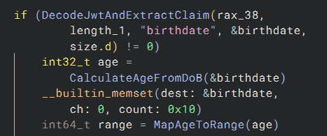

3 minutes
Windows Age APIs Can Expose Your Date of Birth to Apps
TL;DR
- Windows’ new age API is supposed to give an app only your age range
- The current implementation first obtains your date of birth, then calculates the range inside the requesting app’s process
- The requesting process can intercept the token or DOB

The API returns a range—but that is not the whole story
Windows Latest recently reported that Windows 11 will allow apps to request an age range without receiving the user’s birthday. Microsoft’s documentation describes GetUserAgeRangeAsync, which returns ranges such as 13–15, 16–17, or 18+.
On Windows 11 25H2 build 26200.9168, the API is present but currently returns E_NOTIMPL because a DigitalSafetyAPI feature flag is disabled. The implementation is already inside UserMgrProxy.dll, however, so I looked at what will happen after that gate is enabled.
The flow is:
requesting application
-> UserMgrProxy.dll requests an ID token through WAM
-> the token contains the birthdate claim
-> UserMgrProxy.dll extracts the DOB
-> it calculates the exact age
-> it converts that age to a range
-> the public API returns only the range
The relevant decompiled code is unambiguous:
if (DecodeJwtAndExtractClaim(
token, tokenLength, "birthdate", &birthdate, ...))
{
int32_t age = CalculateAgeFromDoB(&birthdate);
memset(&birthdate, 0, sizeof(birthdate));
if (arge >= 0)
int64_t range = MapAgeToRange(age);
// omitted...
}
In other words, Windows receives the DOB and derives the range locally.
The conversion happens inside the requesting process
This distinction matters because UserMgrProxy.dll is loaded into the process that calls the API. I confirmed this by invoking the API from PowerShell and observing C:\Windows\System32\UserMgrProxy.dll loaded in that same PowerShell process. The OAuth response, JWT, and decoded birthdate therefore enter the requesting application’s address space before being reduced to an age range.
This means the process can hook the JWT decoder or inspect its memory to obtain the user’s date of birth. There are plenty of ways to do this because the process has full control over itself, including the DLLs loaded into it.
Windows does perform capability, account, and caller checks. Those checks can prevent an unauthorized app from using the API, but they cannot hide data from an authorized app after Windows has placed that data inside the app’s own process.
I also downloaded and analyzed UserMgrProxy.dll version 10.0.29648.1000 from the latest available Windows preview build. Microsoft changed some internal plumbing, but the core mechanism for obtaining the age range remains the same. While Microsoft can change what it eventually enables or ships, there is currently no sign that it has replaced this design with a broker that returns only an age range.
The application should call a trusted Windows broker or Microsoft service that returns the age range directly. The DOB-to-range conversion should happen before any result crosses into the application’s process. It is surprising to see Microsoft make such a basic privacy-design mistake, even if temporarily.